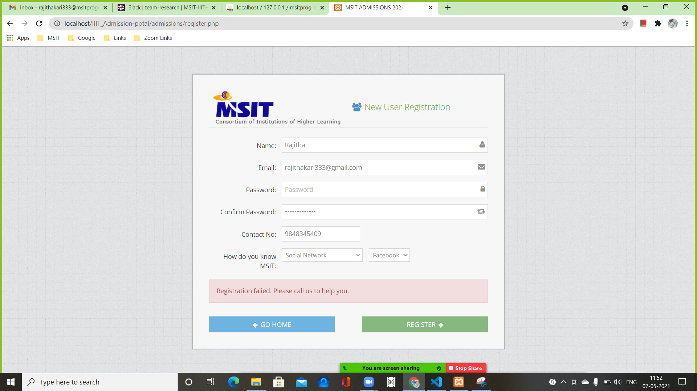
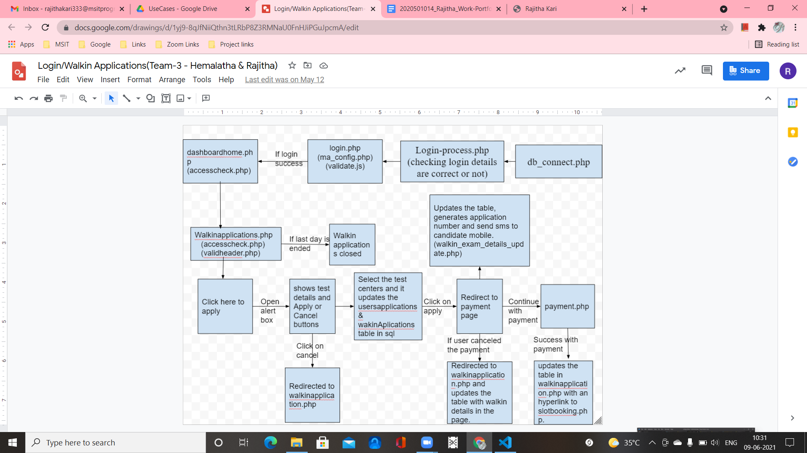
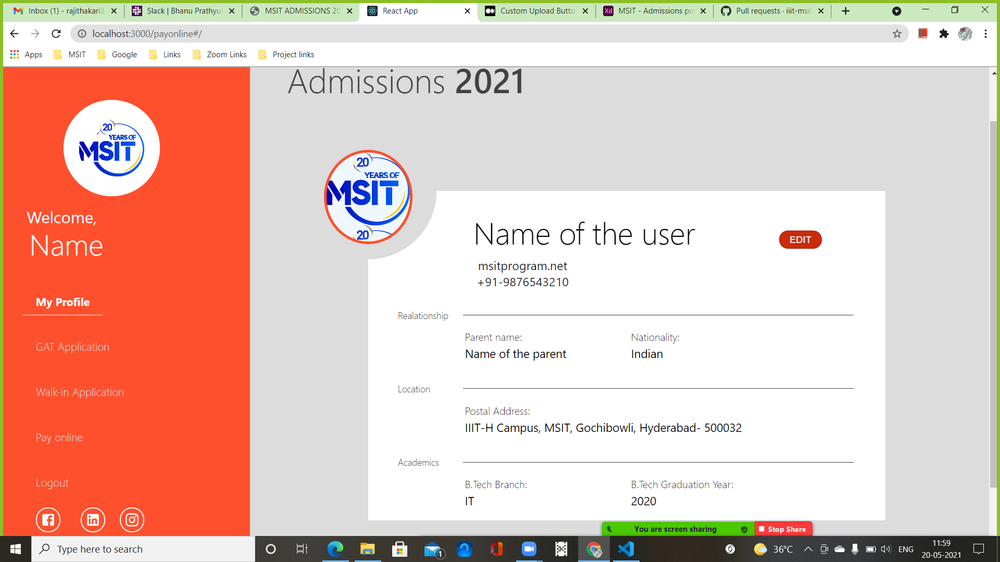
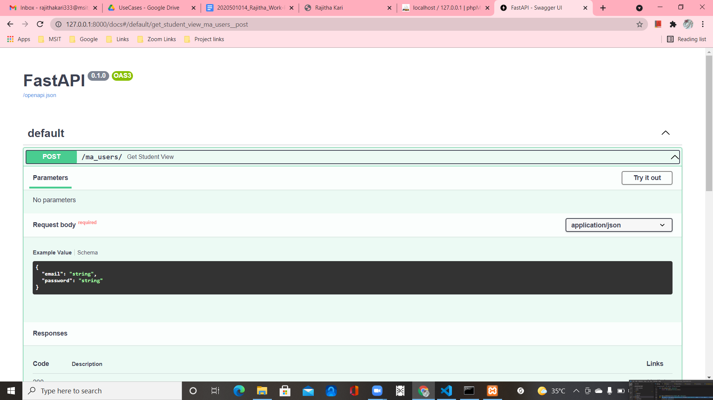
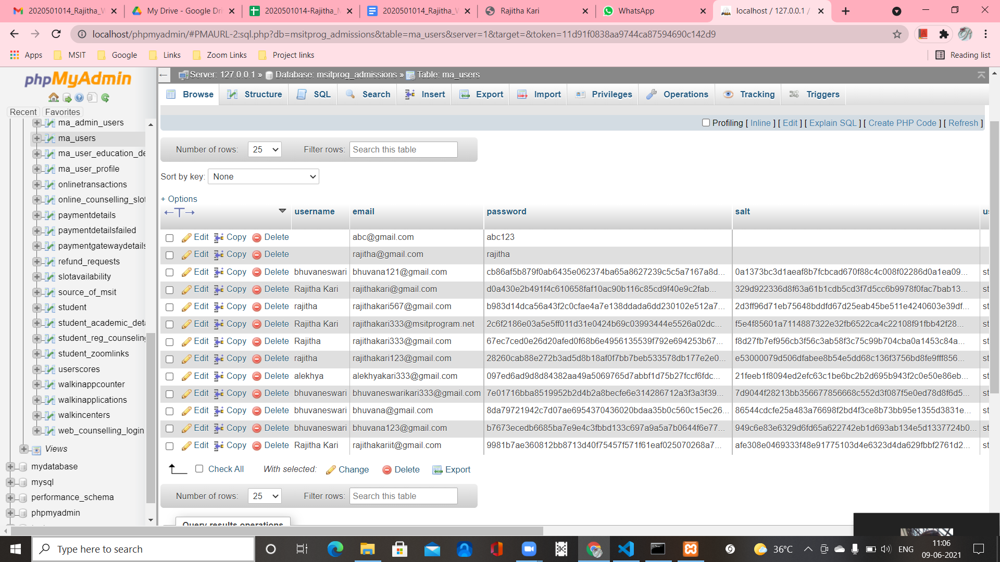

Praticum Project

Admission Portal Website
Week-1
For the first week, we divided into teams and each team consisted of 4 members and divided the modules. We are assigned to View_Profile, Update_Profile and Walk-in Application modules. Firstly, we installed the required software for the project and we tried to understand the requirements of the project.

Week-2
Flow-Chart, Algorithm and Front-End
After analyzing the requirements of the module, I started to implement
the flowchart and algorithm for the module. After getting approval
from our mentor, we started to implement the front-end part of the module.

Week-3
Implementation of Front-End
We started to implement the view_Profile front-end part.
Firstly we created a side nav bar to link all the modules.
Secondly, worked on the body part i.e in view_Profile the
user input fields data and the image. In addition, we also
did the styling for all the modules linked on the view_Profile.
Moreover, we worked on the Walk-in and payments implementation
and styling.

Week-4
Learning Fast API
I started to Fast API by seeing some videos and by working on the examples.
On the first day, I tried a simple example of how to print a message using
the Fast API. Later, I learnt how to connect to the routes and display the
messages. In addition, I tried a student details example with some CRUD
operations. Finally, I learnt how to connect to the database by using
MYSQL using sqlalchemy.

Week-5
Connecting Fast API with React
I learnt how to connect Fast API with React. Firstly, I started to work on a
simple example and after getting clarity, I worked on a student details
example so by using form details from React I tried to POST the details to
the database. Later I worked on the Login component and tried to validate
the user details by connecting to the database.